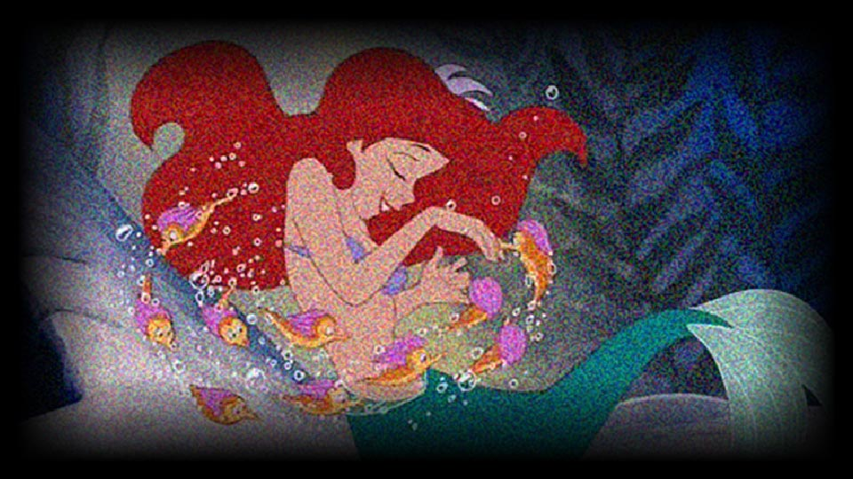
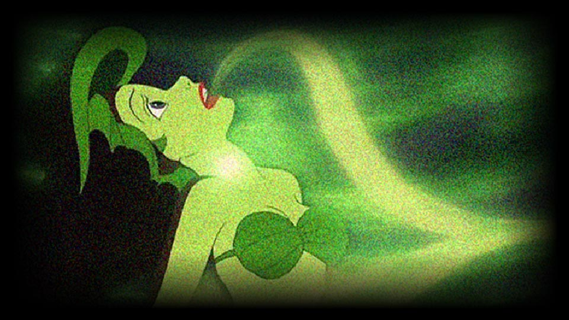
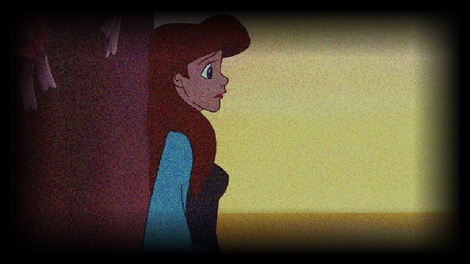

Plot1
아름다운 목소리를 지닌 에리얼은 인간들의 세계에 궁금한 게 많은 인어공주였어요
Plot2
열다섯 살이 된 인어공주는 바다 위로 올라가게 되는데 폭풍에 휘말려 물에 빠진 왕자를 구해줘요
Plot3
왕자를 사랑하게 된 인어공주는 마녀를 찾아가 인간처럼 두 다리가 생기게 해달라고 부탁했고, 마녀는 목소리를 대가로 다리를 만들어줘요
Plot4
육지에 올라온 인어공주는 왕자를 찾아가지만 왕자는 이미 이웃나라 공주와 사랑에 빠졌고 인어공주는 절망에 빠져요
Plot5
인어공주는 왕자의 사랑을 받지 못하면 물거품이 된다는 말이 있었기에 절망해요
Plot6
인어공주가 물거품이 되지 않으려면 날이 밝기 전 왕자의 심장을 찔러야 했죠
Plot7
하지만 인어공주는 사랑하는 왕자를 죽일 수 없어 스스로 바다에 몸을 던져 물거품이 되어버립니다